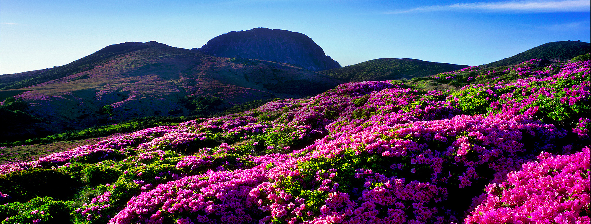
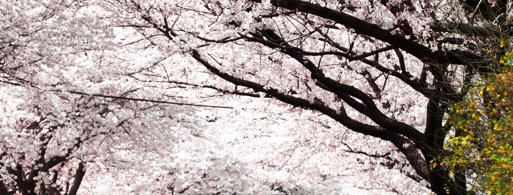

제주도의 가볼만한 곳
- 

- 
"이 곳 제주로 오세요"


성산일출봉은 제주를 대표하는 자연경관 중 하나로 제주의 많은 분화구 중 드물게 바다에서 분출한 화산이에요. 약 30분 정도 소요되는 182m 정상에 올라 보세요. 정상에 오르면 지름 600m의 분화구를 볼 수 있죠. 분화구의 가장자리가 성벽처럼 보인다고 하여 성산, 정상에서 보는 일출이 장관이라고 하여 일출봉이라 해요. 매일 아침에는 일출을 보기 위해 오르는 관광객으로 늘 붐비죠. 입구의 푸른 초원에서는 멋진 사진도 찍고, 우도와 푸른 바다가 보이는 절경을 감상하며 산책할 수 있어요.
추자도는 제주도 북쪽에 있는 섬으로 제주항에서 쾌속선으로 약 1시간 거리예요. 상추자도, 하추자도 등 4개의 유인도와 38개의 무인도로 구성되어 있죠. 추자도 등대에 오르면 독특한 모양의 섬들과 푸른 바다가 어우러진 절경을 감상할 수 있어요. 추자도는 바다낚시의 성지로 알려진 곳이죠. 여름에는 참돔, 돌돔, 농어, 겨울에는 감성돔이 낚시꾼들을 즐겁게 해주죠. 트레킹 애호가라면 올레 18-1 코스를 걷는 것도 좋아요. 여행 중 추자도 특산물인 참조기는 꼭 한번 맛보세요.
우도는 제주에 있는 섬 안의 섬이에요. 서귀포 성산항에서 15분 정도 배를 타고 들어가는 곳이죠. 우도는 제주도와 마찬가지로 용암지대 특유의 지형을 갖고 있고 우도팔경이라 불리는 아름다운 자연경관을 자랑하는 곳이에요. 자전거나 스쿠터를 대여해 섬을 천천히 일주해 보세요. 봄철에는 유채꽃 만발한 우도를 여름밤에는 우도 앞바다 어선들의 조명과 바다가 어우러진 멋진 야경을 볼 수 있어요. 섬 곳곳에서 제주 특유의 이국적 풍경과 예쁜 카페를 만날 수 있어 사진을 찍어 추억으로 남기기에 좋아요. 성산 일출봉과 가까우니 함께 둘러보세요.

반짝이는 푸른 바다에서 몇 미터 떨어진 곳에서 갓 구워낸 조각 케이크와 아이스 커피를 즐기며 기억에 남을 추억을 만들어 보세요. 하지만 안쪽에 앉아 있어도 바다가 내다보이는 커다란 통유리창을 통해서도 주변 풍경을 충분히 즐길 수 있죠. 시간적 여유가 있다면 카페의 커플 카바나나 일광욕 의자를 몇 시간 동안 빌려 보세요.
주소: 대한민국 제주특별자치도 제주시 조천읍 조함해안로 519-10
카페코지는 제주의 동쪽 해안에 있는 조용하고 아늑한 카페예요. 커다란 창을 통해 성산항 어귀와 성산 일출봉의 전경을 바라보다 보면 몇 시간은 쉽게 흘러가 버려요. 경치만으로 충분하지 않다면, 갓 구운 맛있는 빵과 페이스트리를 곁들여 보세요.
주소: 대한민국 제주특별자치도 서귀포시 성산읍 한도로 200
성읍 민속 마을은 옛 제주 마을의 모습을 유지하고 있는 몇 안 되는 민속 마을이에요. 인공적으로 조성된 민속촌과 달리 실제로 사람이 거주하고 있는 마을이기도 해요. 그래서 이곳의 전통 가옥 중에는 민박이나 상점으로 운영되는 곳도 있어요. 현무암을 쌓아 만든 낮은 돌담으로 둘러싸인 초가집 외에도 향교와 성문 등 역사를 느낄 수 있는 건물이 많이 남아 있으니 천천히 둘러보세요.
주소: 제주 서귀포시 표선면 성읍정의현로 19
제주도에는 용암이 굳어 형성된 지형이 많은데, 그중 용암이 굳은 형태가 마치 용의 머리 모양과 닮은 용두암은 입장료가 없어 누구나 가던 길을 멈추고 볼 수 있는 관광지예요. 공항에서 가깝고 주차장이나 전망대 등 관광을 위한 시설도 잘 정비되어 있어요. 제주 여행을 시작하려는 데 목적지를 정하지 못했다면 용두암에서 시작하는 건 어떨까요? 이곳에서 바다를 감상하며 천천히 여행을 준비해 보세요.
주소: 제주 제주시 용담2동
제주 4.3 사건을 기억하고 기념하기 위해 설립된 제주 4.3 평화기념관과 평화공원을 전부 관람하려면 충분한 시간이 필요해요. 아무 잘못도 없이 희생당해야 했던 사람들의 이야기에 저절로 숙연해져요. 4.3 평화공원에는 동독과 서독을 갈라놓았던 베를린 장벽의 일부가 전시되어 있기도 해요. 많은 것을 생각하고 배울 수 있는 아프지만 아름다운 이곳에 꼭 방문해 보세요.
주소: 제주특별자치도 제주시 명림로 430
수백 년의 수령을 자랑하는 비자나무가 울창한 숲을 이루는 비자림은 걷기 좋은 숲이에요. 비가 오는 날에도 진흙탕으로 변하지 않을 만큼 길이 잘 정비되어 있어요. 비가 온다면 우산을 쓰거나 비옷을 입고 걸어 보세요. 빗방울이 운치를 더해 맑은 날과는 달리 색다르고 신비한 경험을 할 수 있어요. 입장료도 저렴하고 길을 잃을 염려도 없으니 음악과 편한 신발만 있으면 비자림을 만끽할 수 있어요.
주소: 제주 제주시 구좌읍 비자숲길 55

제주허브동산은 걷기 좋게 꾸며진 산책로 주변으로 알록달록한 꽃과 허브, 나무를 심어 아기자기하게 꾸며 놓은 인공 정원이에요. 그러나 밤이 되면 빛의 터널과 여러 조형물, 빛나는 나무들로 마치 낮과는 전혀 다른 곳에 온 것 같은 기분이 들 거예요. 환상 속 세계에 온 듯한 이 모습을 보기 위해 일부러 밤에만 찾는 사람이 있을 정도랍니다. 낮에도 밤에도 즐거운 이곳에 꼭 방문해 보세요.
주소: 제주 서귀포시 표선면 돈오름로 170
제주불빛정원은 1년 내내 다양한 테마로 일루미네이션을 진행하고 있어요. 특히 장미공원이 유명하지만 아이들이 좋아하는 공룡을 테마로 한 공간도 있어요. 해가 지기 전이라면 애월인생사진관에서 다양한 분위기의 미니 스튜디오를 이용해 사진을 찍어 보세요. 다양한 테마로 방문하는 사람들에게 재미를 주는 이곳에서라면 누구와 함께 방문해도 즐거운 추억을 만들 수 있을 거예요.
주소: 제주 제주시 애월읍 평화로 2346
재일 한국인 건축가 이타미 준이 설계한 방주 교회는 노아의 방주 모양을 한 건물을 얕은 연못이 둘러싸고 있어 물 위에 뜬 듯한 효과를 낸 게 특징이에요. 보는 각도마다 인상이 다른 이 건물은 낮과 밤의 모습도 달라요. 캄캄한 밤이면 은은하게 빛을 내는 모습이 종교를 믿지 않는 사람도 저절로 경건하게 만들어 줘요. 평소 방주교회 건물에 관심이 있었다면 해가 질 때부터 야간의 방주교회의 모습도 감상해 보세요.
주소: 제주특별자치도 서귀포시 안덕면 산록남로762번길 113
제주도 전통 배인 테우의 모습을 본떠 만든 새연교는 서귀포항과 새섬을 잇는 다리로 밤 10시까지 조명을 밝혀요. 우뚝 선 새연교의 조형물은 낮에도 하얗고 깨끗한 돛을 떠올리게 하지만 노을이 질 무렵부터 아름다움을 더해요. 해가 지면 새섬으로 건너가 서귀포항을 바라보는 걸 추천해요. 불을 켠 어선들과 형형색색의 간판에서 흘러나온 빛이 캄캄한 바닷물 위에 비치는 모습이 환상적일 테니까요.
주소: 제주특별자치도 서귀포시 서홍동